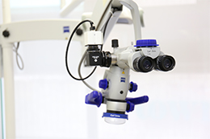
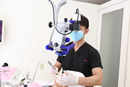
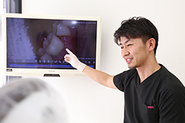
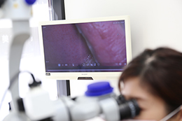
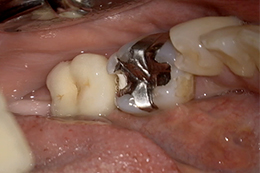
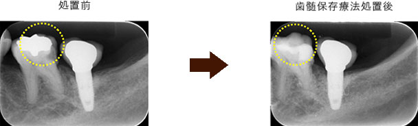
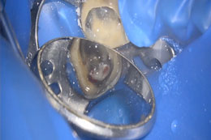
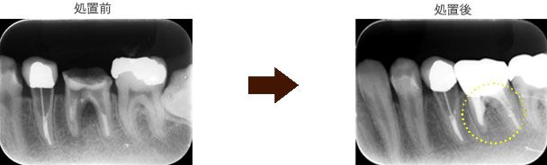
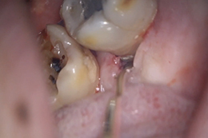

- トップ
- 精密治療（マイクロスコープ）
マイクロスコープ（手術用顕微鏡）を使った精密な治療
横浜市港北区網島の歯医者「高田歯科クリニック」では、診療にマイクロスコープを導入しています。視野を約4～20倍に拡大できるマイクロスコープをさまざまシーンで活用することで、より高品質な治療を実現できています。こちらでは、マイクロスコープを使用するメリット、当院での活用方法などをご紹介します。
マイクロスコープとは？

マイクロスコープとは、手術用顕微鏡のことです。患部を約4～20倍に拡大して見ることができるので、暗く・狭い歯内を格段に見やすくしてくれます。肉眼では見えない細部も、マイクロスコープを使うことでしっかりと確認することができ、従来の歯科医師の経験や技量、勘による治療ではなく、精密で確実な治療が行えるのです。
当院では、根管治療だけではなく矯正治療以外全ての治療にマイクロスコープを使用しています。
歯科治療でマイクロスコープ（手術用顕微鏡）を活用するメリット
診断・治療の正確性が上がる

患部を手探りや推測で治療するのではなく、しっかりと拡大して見ることができるので、迅速で精確な診査・診断につながります。また、迷いやミスの少ない治療が行えるため、治療も無駄なくスピーディに進められます。
診療精度が向上する

肉眼で見えなかった部分まで見えるということは、根管内部や虫歯なども精確に識別できます。また、虫歯が起こりやすい、詰め物・被せ物の微細なズレや隙間もしっかり確認できます。そのため、ごく初期段階の小さな虫歯や歯周組織の病変に早い段階で対処でき、お口全体の健康維持が効果的に行えます。
治療がリアルタイムに見られる

当院で導入しているマイクロスコープにはCCDカメラを取り付けており、治療中だけでなく、治療前後の画像・映像をモニターに映し出して見ることができます。治療について患者様にご説明しやすく、記録としても大変便利に活用できます。これまで患者様に手鏡で見ていただくのには限界がありましたが、大きくモニターで確認できるため、治療の経過や効果をご理解いただけるようになっています。
実際にマイクロスコープを使用した治療映像
大きな虫歯を除去後、神経を保存している動画

マイクロスコープを用いて拡大視野下で虫歯の治療を行うので、無駄な歯質を削ることなく、的確に虫歯を除去することができ、歯髄を保存することができる可能性が高くなります。

神経を取ることなく保存することができました。その後、セラミック修復になります。
実際の処置時の動画
動画では、大きな虫歯を除去していくと、神経まで達していたので、MTAセメントという特殊なセメントで神経を温存しています
パーフォレーションリペアをし、歯を保存した動画

他院にて根の治療を何回も繰り返し行われていて、抜歯と診断された歯を保存。
レントゲン上で不透過性が高まっており骨が再生されているのが認められます。

他院にて抜歯と診断された歯を保存した動画（パーフォレーションリペア）
歯石除去

歯石は歯根表面に付着する為、歯周ポケット（歯と歯茎の間の隙間）にも入り込んで歯根表面にこびりついていることがあります。
見えにくいところである為、肉眼やルーペの治療になると必要に応じて歯肉を切開するなどの処置が必要でしたが、マイクロスコープを使用することにより歯肉を切開することなく、低侵襲性に歯石を除去できるようになっています。
実際の処置時の動画